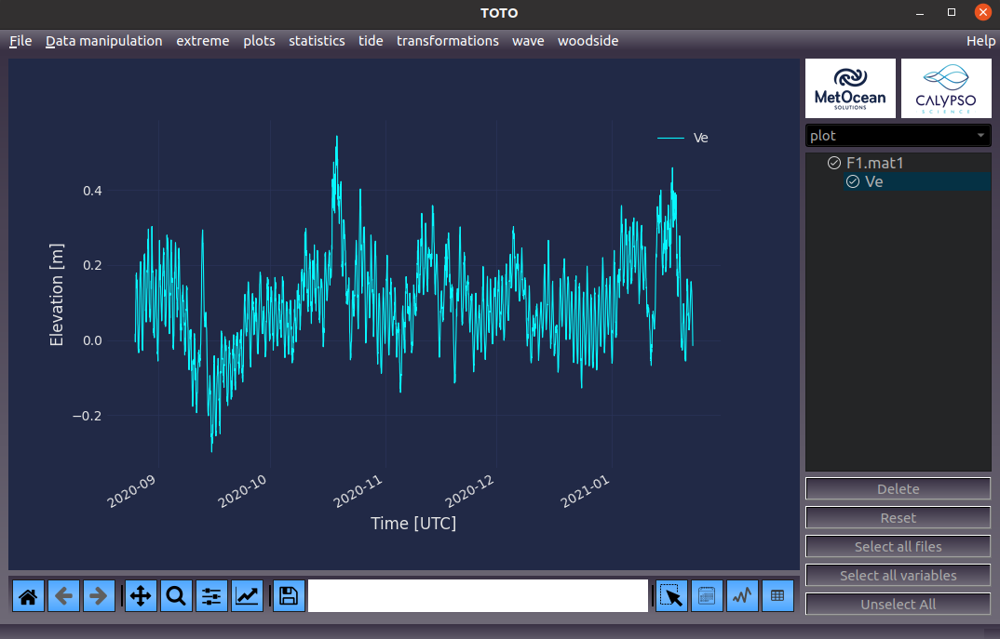
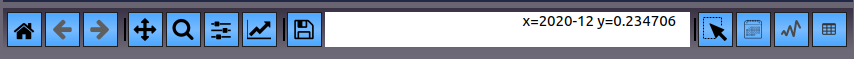
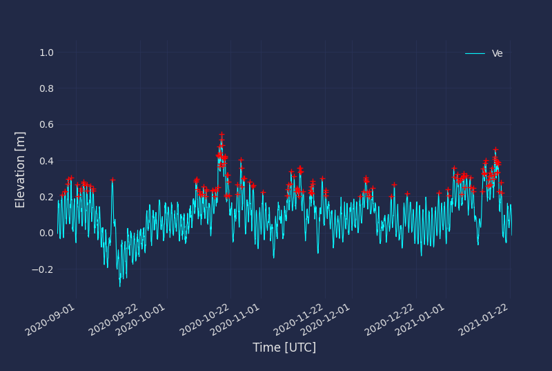
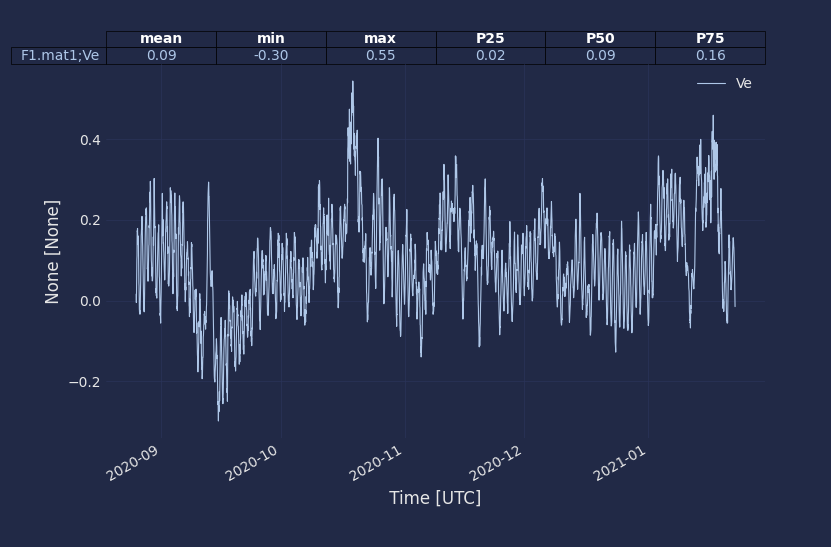

The GUI¶
Main View¶
This is TOTOVIEW main GUI.
{kind=link}
The right-hand side shows all the file and variable that has been loaded into TOTOVIEW. The top bar shows the file input/output menu, Data manipulation menu and all the plugins. A description from all plugins and functions can obtained by going to the Help menu on top right-hand corner. To display a variable into the graph, the user must tick the variable name and a tick mark will appear before the variable name. Multiple variables can be plotted onto the graph. User can click on “Select All variables” to select them all or “Unselect All” to remove them from the graph. When user right clicks on the variable name, different attribute can be changed (i.e. name, unit, scaling factor, offset). If user right clicks on a filename, the file index (time by default) can be changed. This is usefull for plotting scatter plot for exemple.
Different type of plots can be displayed by selecting the plot type on the dropdown menu on top of the variable selection panel on the right-hand side.
The toolbar¶
{kind=link}
The toolbar is taken from Matplotlib toobar. Detail information can be found in this documentation
Some extra button have been added to the toolbar. Any of these buttons can not be used in conjunction with Zoom/Pan button:
{kind=link}
The Seclect button:
Use this button to draw a rectangle to select points. Selected point will be displayed in red.
{kind=link}

The Calendar button:
Use this button select data between two dates. Selected point will be displayed in red.
{kind=link}
The Peak button:
Use this button select peaks in a timeseries. Selected point will be displayed in red. This function is using the scipy function find_peaks
{kind=link}
The table button:
Use this button draw a rectangle aournd the data. Statistics will be calculated for the selected data points and displayed on top of the graph.
{kind=link}
The shortcuts¶
Once data have selected using the toolbar buttons, the user can choose to:
Delete the selected data by pressing “d”
Saving the selected data into a new DataFame by pressing “Enter”
A variable from one file can be copy and pasted to another file by using the CTRL+C and CTRL+V command. Variables can also be dragged from one file to another. If the index (i.e time) is different from one file to another the variable will be interpolated. BECARFULL when moving direction